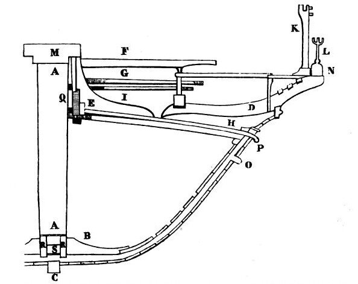

«Жадность судовладельца, стремившегося как можно глубже загрузить свое судно, на протяжении многих веков являлась одной из основных причин гибели торговых судов. С самых далеких времен моряки сознавали значение надводного борта и опасность перегрузки.»
Так начинается интересная статья Л.Николаева об истории грузовой марки – «диска Плимсоля», или «морской гребенки» ("Моделист-Конструктор" 1972, №3). Статья ограничивается в основном событиями XIX-XX веков, хотя история борьбы моряков и грузовладельцев началась, пожалуй, с возникновением торгового мореплавания. Мы, учитывая наш интерес, расскажем о некоторых событиях этой истории в Средние века, и в основном будем опираться на историю галер, в первую очередь – галер Генуи и Венеции.
Венецианская галера La Patronne на веслах
В головах многих любителей морской истории прочно сидит предубеждение, что средневековый флот – это на глаз сколоченные суда, не подчиняющиеся никаким нормам и регламентам. Нам уже приходилось критиковать подобную позицию известного морского историка А.Б. Снисаренко. Сейчас в подкрепление своей точки зрения приведем некоторые данные из генуэзских регламентов, определявших основные размерения судов того времени, а заодно и познакомимся с новыми галерными терминами.
Военные галеры не предназначены были для перевозки больших грузов. Об этом мы уже подробно писали, там же упоминали и деятельность основного законодателя параметров, прежде всего размерений, для вновь построенных генуэзских галер – Officium Gazarie, который выпускал обязательные для исполнения статуты. Эти статуты учитывали интересы как моряков, так и купцов. Подобное законодательные акты существовали и в Венеции (Capitulare nauticum, 1255 год) и у каталанцев (Consulat de la mer, главы CCXLIII и CCXLIV в издании М.Пардессю). Но в Венеции документ менее детализирован, а каталанский документ не так категоричен и определенен, как венецианский и генуэзский статуты. Поэтому опираться в своем рассказе будем на Statuts de Gazarie. Рассмотрим в начале регламент 1441 года. Не вдаваясь в тонкости стиля генуэзских документов XV века (как пишет О.Жаль в своей «Морской археологии» (т. 1, с.262), творцы статутов очень любили использовать в своих документах многочисленные повторы, «видимо из страха, что возможные двусмысленности текста позволят ускользнуть смыслу из положений статутов, которые так важны для коммерции и мореплавания» ), приведем суть содержащихся там положений.
1. Необходимо, чтобы все корабли имели (и это древний обычай – quœ solita sunt apponi) маркировку полной осадки (на современном языке – грузовой ватерлинии), которая производится посредством ferramenta («Statuimus et ordinamus, quod quaelibet navis et navigium navigabile habeat et intelligatur habere ferramenta quae solita sunt apponi in dictis navibus et navigiis, ad mentum contis,... videlicet ad partem inferiorem contis ejusdem novis, ecc. » Statuto genovese del 1441). Честно говоря, мне не удалось пока достоверно установить, что это за ferramenta . В итальянском морском словаре Кораццини четко сказано, что это металлические изделия (ferri). Француз Огюстен Жаль также называет их fers. Но в некоторых работах наших исследователей приводится версия, что это было тавро, выжженное на деревянных бортах.
2. Данные ferramenta должны быть расположены сразу же под бархоутом (утолщенный пояс внешней обшивки, на приводимом ниже чертеже обозначен буквами OP), точнее, под его нижним ребром (mentum contis). Подробно приводится процедура нанесения ватерлинии: сначала на мидель-шпангоуте устанавливается средний маркер, затем через него проводится прямая линия и устанавливаются еще два маркера на определенных носовом (ad latam jugi) и кормовом бимсах. Эти марки должны наноситься двумя чиновниками Officium Gazarie, ответственными за измерение галер. Средняя марка должна наноситься на расстоянии трех и одной шестой пальм (palmes) ниже верхнего выступа бархоута (trenquarin, на чертеже обозначен буквой Р, распроложен в районе ватервейса –– идущего вдоль палубы галеры бруса с вырезами для прохода воды). (Статут 1441, с.52) В зависимости от принятого значения пальма (мы здесь примем генуэзский пальм равным приблизительно 25 см; в известном справочнике Martini приводится значение генуэзского пальма 0,248083 м) высота надводного борта на мидель-шпангоуте при полной нагрузке получается равной около 80 см. (эта величина уменьшается до 77 см, если пользоваться значением пальма, приведенным у О.Жаля – 24,36 см)
